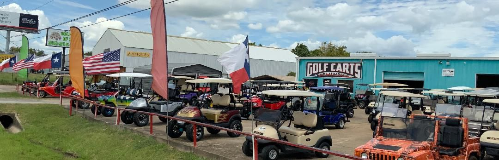

Authorized Tomberlin Dealer & Service Center
Your dream cart,
built in Texas.
New Tomberlin carts, one-of-a-kind custom builds, pre-owned carts and full service for every make. Just 2 miles south of Kemah on Hwy 146.
Golf carts by Tomberlin lead in safety
Safety engineered in, never sold as an upgrade
We take the approach that safety and security should always be engineered and integrated into a personal transportation vehicle, never offered as an aftermarket add-on or sold as an optional upgrade. Unlike the competition, every Tomberlin comes equipped with exclusive safety features to help protect you, your passengers and your belongings.
See the Tomberlin lineup
3-point seatbelts
Standard on every Tomberlin, not an add-on.
4-wheel hydraulic brakes
Confident stopping power at every corner.
Locking storage
Keep your belongings secure.
Unique personal key
Your cart starts with your key only.
The Tomberlin lineup
View the showroom →


Everything for your cart

Custom Golf Carts
Your colors, your logo, your features. From mild to wild, we build it.
Learn more →
Pre-Owned Carts
Used and refurbished carts. Inventory changes constantly, so call or stop by.
Learn more →
Accessories
Lift kits, wheels, seats, lighting, sound, brush guards and more.
Learn more →
Parts & Service
Repair, rebuild or refurbish any golf cart or utility vehicle, gas or electric.
Learn more →
Custom Paint
College themes, matching your truck or boat, business colors. Never the same cart twice.
Learn more →Fleet & Government
Carts and service for cities, schools, parks, campuses, facilities and agencies.
Learn more →Not just for the golf course
Today's cart will likely never see a golf course. It ends up as a beach cart, campground cart, apartment complex cart, hunting cart, farm cart, beach house cart or just a personal carrier. We sell new, custom and used carts and service a wide variety of these increasingly popular and practical vehicles.
We also customize your Club Car, E-Z-GO and Yamaha carts. Tell us what you're looking for and we'll bring the expertise to meet your specifications.
“We can make your dream cart a reality! Bring your ideas to us and we will make it happen!”
Customer Story: Golf Carts of Texas, from Sawblade.tv on Vimeo.
What customers say
“Everyone was so nice, and we got a great deal! Strongly recommend doing business here!”
“Thank you for such great service. We bought our very first custom Louis V. It's beautiful and we love it. This is the place to buy. Great staff and service. They took their time and explained everything to us.”
“Quick turn around, found a very inexpensive fix for my cart and repaired it without up-selling. Reasonable rate for pickup and delivery.”